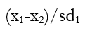
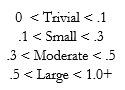

Visit coache.gse.harvard.edu for more partner resources.
© Copyright 2023, The President & Fellows of Harvard College
The principal purposes of the Collaborative on Academic Careers in Higher Education (COACHE) survey are two-fold: (1) to enlighten academic leaders about the experiences and concerns of full-time, faculty; and (2) to provide data that lead to informed discussions and appropriate actions to improve the quality of work/life for those faculty. Over time, we hope these steps will make the academy an even more attractive and equitable place for talented scholars and teachers to work.
The core element of COACHE is a web-based survey designed on the basis of extensive literature reviews; of themes emerging from multiple focus groups; of feedback from senior administrators in academic affairs; and of extensive pilot studies and cognitive tests in multiple institutional contexts. While there are many faculty surveys, the COACHE instrument is unique in that it was designed expressly to take account of the concerns and experiences of faculty on issues with direct policy implications for academic leaders.
This COACHE Faculty Job Satisfaction Survey provides academic leaders with a lever to enhance the quality of work-life for faculty. The report portfolio provides not only interesting data, but also actionable diagnoses - a springboard to workplace improvements, more responsive policies and practices, and an earned reputation as a great place for faculty to work.
The chief aim in developing the COACHE Faculty Job Satisfaction Survey was to assess, in a comprehensive and quantitative way, faculty's work-related quality of life. The survey addresses multiple facets of job satisfaction and includes specific questions that would yield unambiguous, actionable data on key policy-relevant issues.
The COACHE instrument was developed and validated in stages over a period of several years. Focus groups were conducted with faculty to learn how they view certain work-related issues, including specific institutional policies and practices, work climate, the ability to balance professional and personal lives, issues surrounding tenure, and overall job satisfaction.
Drawing from the focus groups, prior surveys on job satisfaction among academics and other professionals, and consultation with subject matter and advisory board experts on survey development, COACHE researchers developed web-based survey prototypes that were then tested in pilot studies across multiple institutions.
COACHE solicited feedback about the survey by conducting follow-up interviews with a sub-sample of the respondents of the pilot study. Cognitive interviews were conducted with faculty from a broad range of institutional types to test the generalizability of questions across various institutional types. The survey was revised in light of this feedback. The current version of the survey was revised further, taking into account feedback provided by respondents in survey administrations annually since 2005.
All eligible subjects at participating institutions were invited to complete the survey. Eligibility was determined according to the following criteria:
Subjects first received a letter about the survey from a senior administrator (e.g., president, provost, or dean) at their institution. Next, subjects received an email from COACHE inviting them to complete the survey. Over the course of the survey administration period, four automated reminders were sent via email to all subjects who had not completed the survey.
Participants accessed a secure web server through their own unique link provided by COACHE and, agreeing to an informed consent statement, responded to a series of multiple-choice and open-ended questions (see Supplemental Materials). Generally, respondents completed the survey in less than twenty-five minutes; the mode (most frequent) completion time was approximately 24 minutes.
For a participant's responses to be included in the data set, s/he had to provide at least one meaningful response beyond the initial demographic section of the instrument. The responses of faculty who either terminated the survey before completing the demographic section or chose only N/A or Decline to Respond for all questions were removed from the survey data set, although they remained in the population data file. The impact of such deletions, however, is relatively small: on average, greater than 90 percent of respondents who enter the COACHE survey go on to complete it in its entirety.
When respondents completed the survey in an inordinately short time or when the same response was used for at least 95% of items, the respondents were removed from the survey data file.
For demographic characteristics which impact a respondent's path through the survey (tenure status and rank) or the COACHE Report (gender and race) institutionally provided data is confirmed by the survey respondent in the demographics section of the survey. When respondent answers differ from institutional data, COACHE always recodes the data to match the respondent's selection.
In responses to open-ended questions, individually-identifying words or phrases that would compromise the respondent's anonymity were either excised or emended by COACHE analysts. Where this occurred, the analyst substituted that portion of the original response with brackets containing an ellipsis or alternate word or phrase (e.g., [...] or [under-represented minority]). In the case of custom open-ended questions, comments were not altered in any way.
Within the report, comparisons between your institution and the cohort group provide context for your results in the broader faculty labor market. While the experiences, demands, and expectations for faculty vary by institutional type - reflected in your peer selections - this comparison to the entire COACHE cohort can add an important dimension to your understanding of your faculty. The institutions included in this year's cohort group is listed under Comparison Institutions in this report.
In prior reports, a weighting scale was developed for each institution to adjust for the under- or over-representation in the data set of subgroups defined by race and gender (e.g., White men, Asian women, etc.). Applying these weights to the data thus allowed the relative proportions of subgroups in the data set for each institution to more accurately reflect the proportions in that institution's actual population of pre-tenure faculty.
However, the use of weights poses some methodological challenges. First, and foremost, the actual application of weights in the COACHE report only produced very small changes in results. Because COACHE does not use samples the respondent group typically is representative of the full population. Also, weights applied to an overall mean are less useful when comparing subgroups of the respondent population. When weighted data is disaggregated, the utility of the weights is compromised. For these reasons and others, the use of weights for this type of large scale analysis is becoming less common. We ceased the practice many years ago.
Put simply, an effect size describes the magnitude of difference between two groups, regardless of statistical significance. In this report, effect sizes measure the differences between paired subgroups within a campus (i.e., men and women, tenured and pre-tenure faculty, associate and full professors, white faculty and faculty of color).
We do not use tests of statistical significance in part because COACHE is a census, not a sample; differences in means are representative of the population, not of some broader sample. We rely on effect sizes, instead, because they consider both the central tendency and the variance, countering concerns about differences in group sizes. Also, unlike other measures of differences between groups, effect sizes show both the direction and magnitude of differences.
Effect sizes in this report are calculated using the formula below where:

In the social science research domain in which COACHE operates, the following thresholds are generally accepted ranges of effect size magnitude.

This report ignores trivial differences, but subgroups appear in the Within Campus Differences tables when their ratings are lower than their comparison group by a small (unshaded), moderate (yellow), or large (orange) effect.
Any respondent identified by his or her institution or self-identifying in the survey as non-White. Those who identified or were identified as "other" were not included in this group.
Any respondent identified by his or her institution or self-identifying in the survey as non-White and non-Asian/Asian-American. Those who identified or were identified as "other" were not included in this group.
To protect the identity of respondents and in accordance with procedures approved by Harvard University's Committee on the Use of Human Subjects, cells with fewer than five data points (i.e., mean scores for questions that were answered by fewer than five faculty from a subgroup within an institution) are not reported. Instead, "n < 5" will appear as the result.
The percent of all eligible respondents, by tenure status, rank, gender and by race, whose responses, following the data conditioning process, were deemed eligible to be included in this analysis. Thus, your response rate counts as nonrespondents those faculty who were "screened out" by the survey application or by later processes.
As stated in the report, COACHE Benchmarks are the unweighted means of several five-point Likert scale survey items that fall within the same theme. Starting in the 2023-24 survey cycle, some adjustments to items included in these benchmark scores were made. In previous administrations of the survey, there were some questions that were limited to community colleges that have since become questions asked of faculty at all institution types. Therefore, more survey items have now been included in several benchmark scores. To see which specific survey items have been included in defining each benchmark, please refer to the instrumentation summary delivered with your reports. In this document, a dagger footnote indicates which items were added starting in 2023-24.
Please feel free to contact COACHE with any additional questions about our research design, methodology, or definitions; about survey administration; or about any aspects of our reports and available data.